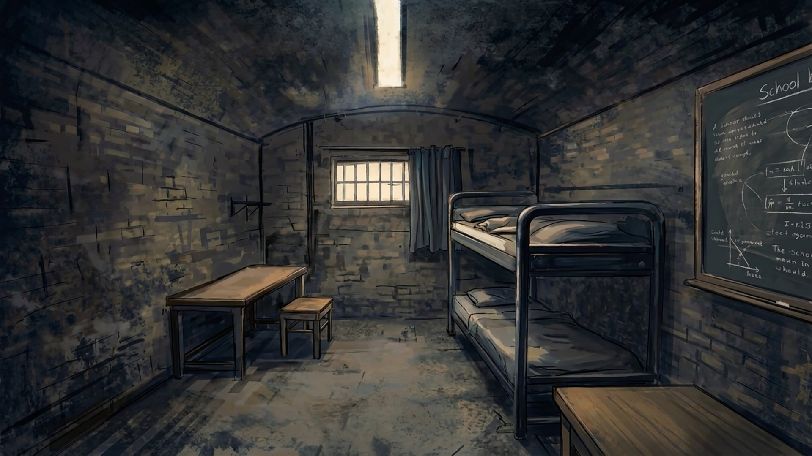
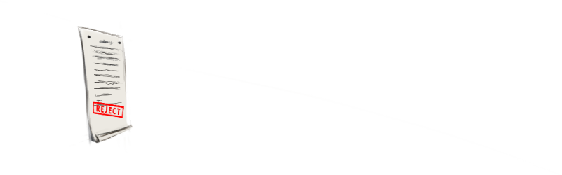
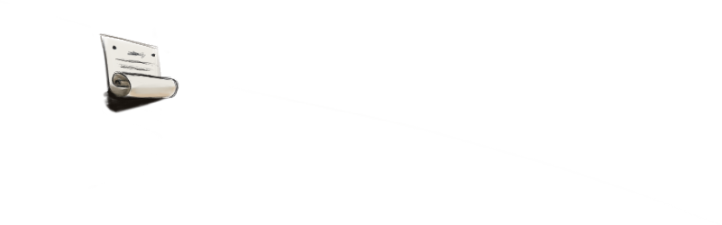
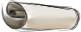

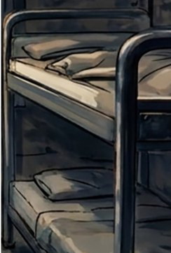

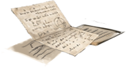
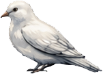
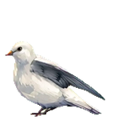
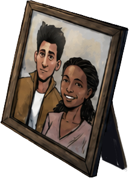
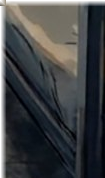
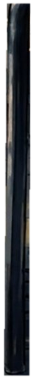
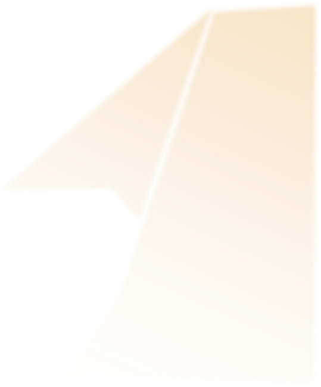
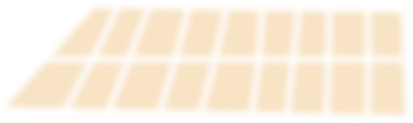
We All Breathe the Same Air
A graphic novel in four chapters
We All Breathe
the Same Air
Every object in his room opens a chapter. Follow the small light.
The End
We All Breathe
the Same Air
Turn your screen sideways for the best view.